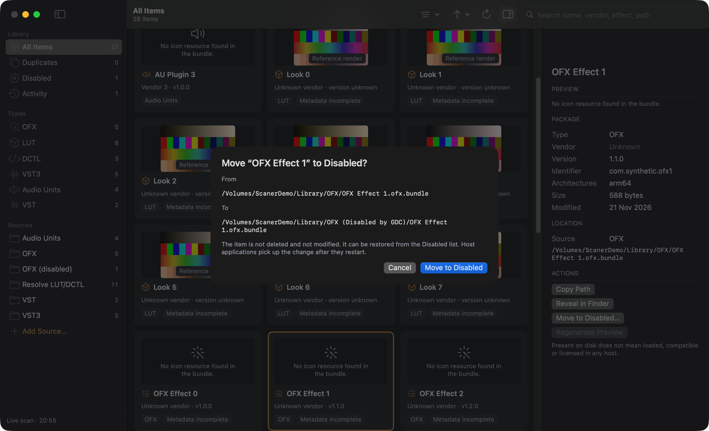

Scaner GDC
A free macOS app that finds the OFX, LUT, DCTL, VST3, Audio Unit and VST resources installed on your Mac, shows what each one is, previews it, and lets you set items aside and bring them back. Scanning only reads; Disable and Restore move files, with a recorded way back.

Scan, inspect, organize
- 01
Scan
Reads the standard plug-in and LUT folders, the DaVinci Resolve LUT and DCTL folder, and any folder you add. Read-only: it never opens plug-in binaries beyond the file header and never runs anything.
- 02
Inspect
Name, vendor, version, identifier, architectures, size and location, taken from the package's own metadata. Unknown stays unknown. Duplicates found in several places are flagged. Optionally, you can add a cover, a short description and the official page of a product: from your own image, or from a page you associate. Online lookup is off until you use it and never sends paths, files or licences. Automatic discovery of product pages is optional and needs a search key of your own; without it you associate the page yourself.
- 03
Organize
Search, filter by type, vendor or source, and sort. Move an item to a Disabled folder and restore it later; every operation is recorded in an activity list.
Formats and what is read
Limits you should know
- Present on disk does not mean loaded, compatible or licensed in any host application.
- Previews of .cube files are rendered on a built-in reference image with sRGB assumed, 8-bit. They show the character of a LUT, not a host-accurate result on your footage.
- Vendor and version appear only when the package declares them; nothing is guessed.
- Plug-ins are never loaded, scanned by running them, or validated. There is no network access and no account.
| Format | Where it looks | What is read | Preview |
|---|---|---|---|
| OFX | /Library/OFX/Plugins | Bundle metadata, architectures | Bundle icon, if the bundle ships one |
| VST3 | /Library and ~/Library Audio/Plug-Ins/VST3 | Bundle and module metadata | Bundle icon |
| Audio Unit | /Library and ~/Library Audio/Plug-Ins/Components | Bundle and audio component metadata | Bundle icon |
| VST | /Library and ~/Library Audio/Plug-Ins/VST | Bundle metadata | Bundle icon |
| LUT (.cube) | DaVinci Resolve LUT folders and your own folders | Size, title, domain | Rendered on a synthetic reference image, before and after |
| LUT (.3dl .dat .vlt .mga .csp) | same | File header | Listed; no preview |
| DCTL | Resolve LUT folder (DCTL sub-folder) | The first 256 KB of text | Never executed; no preview |
Disable and restore, with a way back
Choosing “Move to Disabled…” first checks the item, then asks for confirmation in the app. The item is moved — never deleted — to a folder next to its source folder named “… (Disabled by GDC)”, or to a folder you choose in Settings. On the same volume the move is a single atomic rename that refuses to overwrite anything. Across volumes the item is copied, verified byte by byte, and only then is the original moved to the Trash.
- Every operation is written to a journal; if the app or the Mac stops half-way, the next launch finishes or rolls back safely and tells you what it did.
- If something already exists at the destination, nothing is overwritten and the operation is blocked with the reason.
- System folders such as /Library/OFX/Plugins usually need administrator rights. Scaner GDC has no privileged helper, so it explains that the folder is not writable instead of asking for your password. Move such items yourself in Finder, or use a folder you own.
- Host applications keep loaded plug-ins until they restart. The app warns when a known host is running and never closes anything.
- Notarization by Apple does not grant file access; macOS permissions still apply.

Download and install
Version 0.5.1. Open the disk image and drag Scaner GDC to Applications. The app is signed with a Developer ID certificate and notarized by Apple, so macOS opens it without workarounds.
Requirements
- macOS
- 14 (Sonoma) or later
- Mac
- Intel / Apple silicon
- Size
- 3.0 MB
- SHA-256
- 243d5a9d22fb3be8d0b048281483aff1af24658021d3b155fd1ecb8a2bc32168
Release notes
0.5.1
Scanning of standard and custom folders, previews for .cube LUTs and bundle icons, recoverable Disable and Restore, diagnostics export, accessibility labels, new icon.
Licence, source and credit
Scaner GDC is free software. Use it, study it, modify it and redistribute it. The source code is public; anyone who distributes the app must also make the corresponding source available.
A modified version must keep this credit in its About window and say clearly that it is modified and not made or endorsed by the author. The credit is not required on anything you process with the app. The name and logo are outside the licence grant: the unmodified logo may identify the original; modified versions use their own identity (a neutral icon is provided). The app has no self-updater: to update, download the new release.
- Author
- Cristi Gordaș (GDC)
- Licence
- GNU General Public License v3 only, with additional terms under section 7 (attribution, no misrepresentation of origin, no trademark grant)
- Credit shown in About
- Scaner GDC — creat de Cristi Gordaș (GDC).
- Source
- https://github.com/gordasgdc/scaner-gdc
Part of the GDC family
Scaner GDC is a separate app. It sits next to GDC Plugin Manager, the platform where GDC apps are presented and managed. GDC Plugin Manager